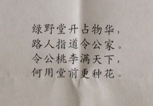

Home.
Courses.
Publications.
Google Scholar.
Students Supervised
Peaches and Plums everywhere...

Current Research Advisees:
Joshua Agterberg (AMS doctoral student)
Guodong Chen (AMS doctoral student)
Cong Mu (AMS doctoral student)
Aranyak Acharyya (AMS doctoral student)
Ningyuan (Teresa) Huang (AMS doctoral student)
Tianyi Chen (AMS doctoral student)
Roy Siegelmann (AMS doctoral student)
Mathematics Genealogy Project
Past Research Advisees:
Heather Gaddy Patsolic, Ph.D. (2020)
Dissertation Title: Graph Matching and Vertex Nomination
Defended: March 2020
Heather is now at Accenture Federal Services: hmgaddy@icloud.com
Joshua Cape, Ph.D. (2019)
Dissertation Title: Statistical Analysis and Spectral Methods for Signal-Plus-Noise Matrix Models
Defended: March 2019
Joshua is now Assistant Professor position at University of Pittsburgh: joshua.cape@pitt.edu
Gongkai (Percy) Li, Ph.D. (2019)
Dissertation Title: Dissimilarity Learning under Noise: Classical Multidimensional Scaling and Randomer Forests
Defended: May 2019
Percy is now at Constellation Energy: ligkpercy@gmail.com
Mingyue Gao, Ph.D. (2019)
Dissertation Title: On Manifold Learning Subsequent Inference
Defended: March 2019
Mingyue is now at Financial Industry Regulatory Authority: mygao90@gmail.com
Congyang Yuan, Ph.D. (2019)
Dissertation Title: Simultaneous Dimensionality and Complexity Model Selection for Spectral Graph Clustering
Defended: January 2019
CY is now at Sensagrate, LLC: yangcy.ee@gmail.com
Shangsi Wang, Ph.D. (2018)
Dissertation Title: Statistical Inference on Multiple Graphs
Defended: January 2018
Shangsi is now at Two Sigma: shangsiwang@gmail.com
Runze Tang, Ph.D. (2017)
Dissertation Title: Robust Estimation from Multiple Graphs
Defended: July 2017
Runze is now Quantitative Associate at Citi: tangrunze@gmail.com
Keith Levin, Ph.D. (2016)
Dissertation Title: Graph Inference with Applications to Low-Resource Audio Search and Indexing
Defended: December 2016
Keith is now Assistant Professor at University of Wisconsin: keith.levin@gmail.com
Jordan Yoder, Ph.D. (2016)
Dissertation Title: On Model-Based Semi-Supervised Clustering
Defended: March 2016
Jordan is now Senior Quantitative Analyst at Exelon Corporation: jordan.yoder@gmail.com
Heng Wang, Ph.D. (2015)
Dissertation Title: Community Detection using Locality Statistics
Defended: December 2015
Heng is now Platform Engineering research scientist at MachineZone: whalessandro@gmail.com
Cencheng Shen, Ph.D. (2015)
Dissertation Title: Matching and Inference for Multiple Correlated Data Sets
Defended: March 2015
Cencheng is now Assistant Professor at University of Delaware: charlie.cshen@gmail.com
Li Chen, Ph.D. (2015)
Dissertation Title: Pattern Recognition on Random Graphs
Defended: March 2015
Lee is now Data Scientist at Intel: lichen.jhu1@gmail.com
Sancar Adali, Ph.D. (2014)
Dissertation Title: Joint Optimization of Fidelity and Commensurability for Manifold Alignment and Graph Matching
Defended: March 2014
Sancar is now at Raytheon BBN Technologies: sadali@gmail.com
Daniel Sussman, Ph.D. (2014)
Dissertation Title: Foundations of Adjacency Spectral Embedding
Defended: December 2013
Daniel is now Assistant Professor in the Department of Mathematics & Statistics at Boston University: dpmcsuss@gmail.com
Ming Sun, Ph.D. (2013)
Dissertation Title: Data Fusion via Manifold Matching
Defended: September 2013
Ming is now Machine Learning Scientist at Amazon in Boston: sunming425@gmail.com
Yichen Qin, Ph.D. (2013)
Dissertation Title: Robust Inference via Lq-Likelihood
Defended: June 2013
Yichen is now Associate Professor at the University of Cincinnati: yichenqin@gmail.com
Adam Cardinal-Stakenas, Ph.D. (2011)
Dissertation Title: Choosing a Dissimilarity Representation for Classification
Defended: February 2011
Adam is employed with DoD: cardinal.stakenas@gmail.com
Ting Yang, Ph.D. (2010)
Dissertation Title: The Effect of Model Misspecification on Semi-supervised Classification
Defended: December 2010
Ting is now at Armstrong Institute: ty.tingyang@gmail.com
Zhiliang Ma, Ph.D. (2010)
Dissertation Title: Disparate Information Fusion in the Dissimilarity Framework
Defended: October 2010
Zhiliang is now at facebook: zhiliang.ma@gmail.com
Andrey Rukhin, Ph.D. (2009)
Dissertation Title: Asymptotic Analysis of Various Statistics for Random Graph Inference
Defended: April 2009
Andrey is Senior Research Scientist at Metron, Inc.: rukhin@gmail.com
Elizabeth (Libby) Beer, Ph.D. (2009)
Dissertation Title: Latent Position Random Graphs: Theory, Inference, and Applications
Defended: February 2009
(Co-advisor with Ed Scheinerman)
Libby is now at Center for Computing Sciences (IDA/CCS-Bowie): libby.beer@gmail.com
Xugang Ye, Ph.D. (2008)
Dissertation Title: Random Disambiguation Paths: Models, Algorithms, and Analysis
Defended: September 2008
(Co-advisor with Shih-Ping Han)
Xugang is now at Microsoft Bing Information Platform: xugangye@microsoft.com
Al Aksakalli, Ph.D. (2007)
Dissertation Title: Protocols for Stochastic Shortest Path Problems with Dynamic Learning
Defended: March 2007
(Co-advisor with Donniell Fishkind)
Al is now Associate Professor at Department of Mathematical Sciences, RMIT University, Australia: vural.aksakalli@rmit.edu.au
Kendall Giles, Ph.D. (2007)
Dissertation Title: Knowledge Discovery in Computer Network Data: A Security Perspective
Defended: October 2006
Kendall is now Assistant Professor at Department of Electrical and Computer Engineering, Virginia Tech University: kendallgiles@gmail.com
Majnu John, Ph.D. (2005)
Dissertation Title: A data-adaptive methodology
for finding an optimal weighted generalized
Mann-Whitney-Wilcoxon statistic
Defended: January 2005
Majnu John is
Institute Scientist in the Feinstein Institute and
Director of Biostatistics in the Department of Psychiatry at LIJ:
mjohn5@nshs.edu
Elvan Ceyhan, Ph.D. (2005)
Dissertation Title: An Investigation of Proximity Catch Digraphs in Delaunay Tessellations
Defended: October 2004
Elvan is now Associate Professor at Auburn University: elvanceyhan@gmail.com
Jason DeVinney, Ph.D. (2003)
Dissertation Title: The Class Cover Problem and its Applications in Pattern Recognition
Defended: November 2002
Jason DeVinney is now at Center for Computing Sciences (IDA/CCS-Bowie): jasondevinney@gmail.com
Adam Cannon, Ph.D. (2001)
Dissertation Title: Approximate Distance Methods in Classification
Defended: May 2000
(Co-advisor with Lenore Cowen)
Adam Cannon is now at Columbia University: cannon@cs.columbia.edu ; http://www.cs.columbia.edu/~cannon/homepage/Adam_Heath_Cannon.html
Peng Tao, Ph.D. (2000)
Dissertation Title: The Generalized Borrowed Strength Method and the Application to Image Recognition
Defended: March 2000
Peng Tao is now at AccuImage: peng.tao@gmail.com
Dalei Chen, Ph.D. (2000)
Dissertation Title: Borrowed Strength Density Estimation and Applications
Defended: November 1999
Dalei Chen is now at Bristol-Myers Squibb: dalei.chen@bms.com
Jingdong Xie, Ph.D. (1999)
Dissertation Title: Generalizing the Mann-Whitney-Wilcoxon Statistic
Defended: April 1999
Jingdong Xie is now Associate Director of Biostatistics at Forest Research Institute: jingdong.xie@frx.com
Dominic Lee, Ph.D. (1996)
Dominic Lee is Senior Lecturer at University of Canterbury, Christchurch, New Zealand: D.Lee@math.canterbury.ac.nz
Anton Alyakin, M.S. (2019)
Thesis Title: LqRT: A Robust Lq-likelihood-ratio-type Test in Python
Hayden Helm, M.S. (2018)
Thesis Title: Vertex Classification on Weighted Networks
Nikhil Ram Mohan, M.S. (2009)
Nikhil is now in the MD/PhD program at Northwestern University
Allison Barker, M.S. (2003)
Karen Shahar, M.S. (2000)
"Quantitative Differentiation of Breast Lesions Based on 3-Dimensional Morphology from MR Imaging"
Karen Cohen nee Shahar is now a
radiation oncologist in private practice in Houston, TX.
Howard Friedman, Ph.D. (2000) : howiefriedman@yahoo.com